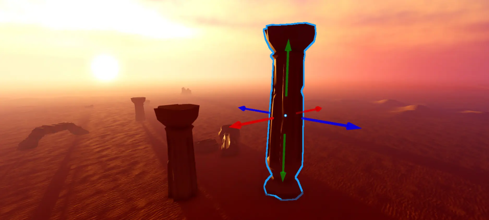
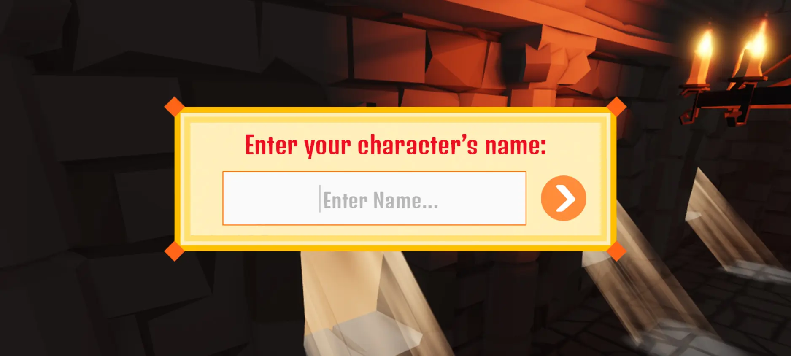
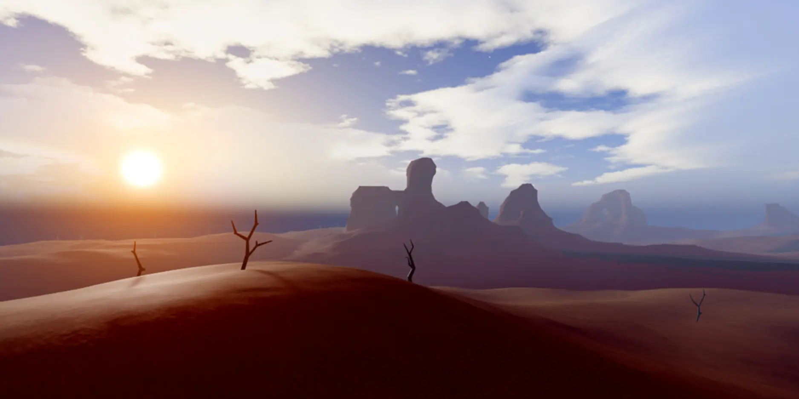
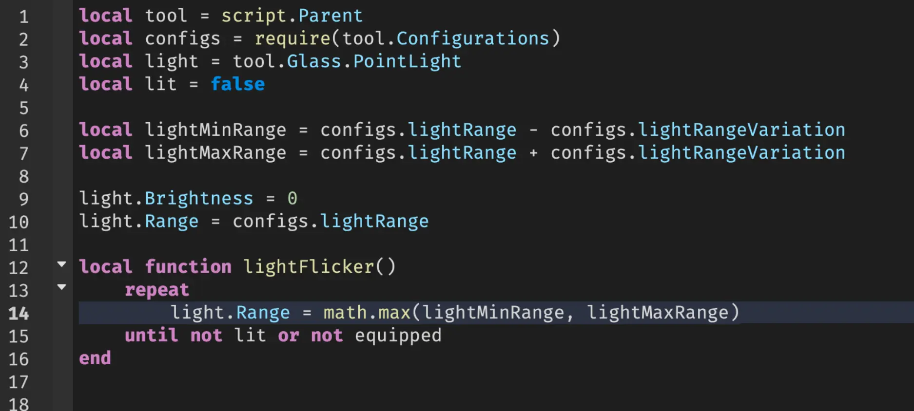
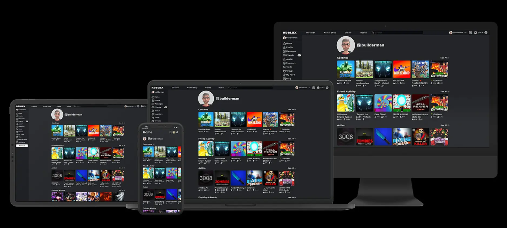
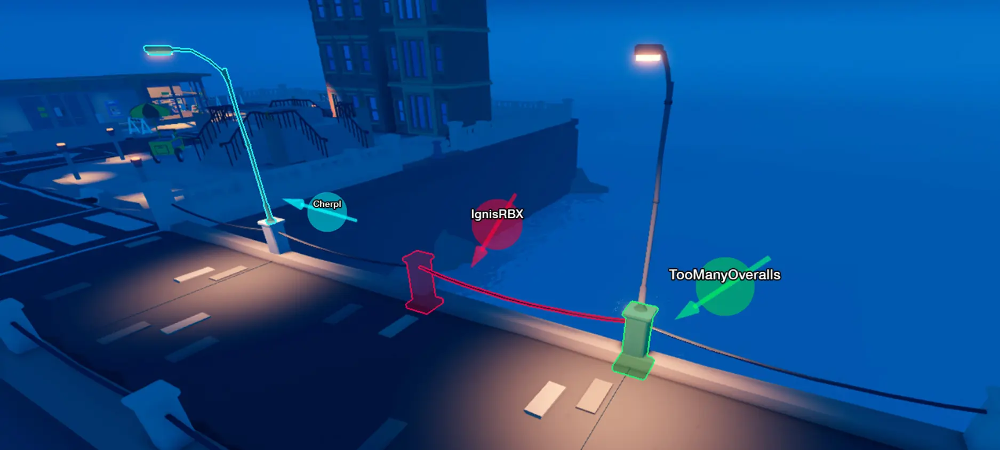

-
Мощные инструменты для 3D-сборки
Создавайте практически все, что только можете себе представить, комбинируя детали и сетки в модели со встроенными материалами или вашими собственными текстурами.
Наложите или интегрируйте компоненты пользовательского интерфейса, такие как текстовые надписи и кнопки, рекламные щиты и экраны инвентаря, чтобы предоставить пользователям больше способов взаимодействия с вашим режимом.
Создавайте крупномасштабные ландшафты, состоящие из воды, пустыни, гор и многого другого, чтобы придать своим творениям ощущение интимности или масштабности. Поднимите свой опыт на новый уровень, настроив освещение и атмосферу, интегрировав звук и применив спецэффекты.

Интегрированные сценарии, отладка и тестирование
Roblox поставляется с множеством встроенных функций, таких как подбор партнеров и физика, но для того, чтобы сделать режим уникальным, необходимы специальные скриптовые функции. Studio предоставляет полный доступ к API движка Roblox через полнофункциональный редактор сценариев с современными удобствами, такими как автозаполнение и подсветка кода. Встроенные функции отладки и профилирования позволяют вам обнаруживать ошибки и настраивать производительность, чтобы ваши приложения работали наилучшим образом на всех устройствах. Наконец, вы можете тестировать непосредственно в Studio с помощью нескольких режимов тестирования и эмуляции.
Быстрая публикация и обновление
Roblox не только предоставляет движок и инструменты, но и предоставляет вам доступ к большой социальной сети пользователей на широком спектре устройств. Просто нажмите, чтобы опубликовать, и ваш режим автоматически станет доступен в этой сети со встроенными возможностями обнаружения и монетизации. Хотите изменить свой режим? Внесите изменения и обновите их немедленно для всех пользователей в одно мгновение.
Возможности для совместной работы и расширения
В Studio есть встроенные инструменты для совместной работы, чтобы вы и ваши соавторы могли создавать в свободное время или вместе в режиме реального времени. Перетаскивайте части в общую рабочую область, где изменения доступны всем одновременно, общайтесь со своей командой в режиме реального времени, а все ваши изменения сохраняются и управляются в облаке.
Вы также можете расширить набор функций Studio с помощью пользовательских плагинов или создать свои собственные плагины, чтобы поделиться ими с остальным сообществом Roblox.